Streamline your end-to-end developer workflow with AI
Official description
Most developers want to ship their own ideas, but the friction between coding, communication, and release slows them down. In this session, follow a real daily workflow building Clova—from ideation to launch—using GitHub Copilot in VS Code, Microsoft Teams, Logitech MX tools, and AI-assisted workflows. Learn practical patterns to streamline work, reduce friction, and accelerate execution.
Summary
Overview
A solo walkthrough of how a startup founder ships a product end to end—from ideation to launch—using AI tooling to compress the friction between coding, communication, and release. The session frames AI as leverage that lets small teams test more ideas faster, organized around four phases: ideation, building, team communication, and go-to-market.
Topics covered
- Generating startup ideas by building for problems you personally face and where you have domain expertise, which deepens problem understanding and provides early adopters through existing networks.
- Capturing ideas the moment they arise using hardware shortcuts (a configured action ring to open a notepad, frequent screenshots, music play/pause to shift mental modes).
- Running user interviews focused on deterministic, low-bias questions: what people spend the most time on, what their day looks like, and what their organization has budget for.
- Using GitHub Copilot in VS Code not just for code but for generating documentation and tests, with pre-tested prompts mapped to keypad keys for fast reuse.
- Managing the AI context window by starting a fresh AI session per feature and writing a detailed "AI doc" after each session so future sessions and the developer can catch up.
- Shifting team culture from debating which features to ship toward shipping multiple experiments to production and letting the market reveal where the pull is.
- Improving team communication by having AI generate nicely formatted HTML docs to present on calls, improving alignment and information digestion.
- Using Microsoft Teams transcription to auto-capture meeting documentation and action items.
- Go-to-market tactics by meeting users where they gather: Twitter and Product Hunt for developers, open-source projects for GitHub visibility and contributors, Instagram and LinkedIn for the speaker's own audience, and building in public via YouTube.
- Reaching out to acquired users via templated messages (stored on a keypad) to schedule feedback calls and build relationships.
- The rise of personalized software now that AI lowers the time and energy cost of building niche tools.
Notable quotes
"Building is still the skill. But the leverage now is that AI lets us build so much faster, so we can put up more shots and test out way more ideas."
"Instead of debating, we just try multiple features and go to production with it because, at the end of the day, we want to let the market decide and see where the pull is coming from."
"You always want to catch the ideas the moment they come up because they can very quickly go away."
Products and tools mentioned
- GitHub Copilot
- GitHub Copilot Chat
- VS Code
- Microsoft Teams
- Logitech MX Master 4
- Logitech MX Creative Keypad
- GitHub / GitHub Stars
- Product Hunt
- YouTube
Speakers featured
- Will Wang — Founder of Clova, an AI agent for generating and iterating on on-brand assets for brands and businesses; backed by the Founders Inc. accelerator (Fort Mason, San Francisco); YouTube creator documenting his startup journey (18,000+ subscribers).
Frames
{kind=link}
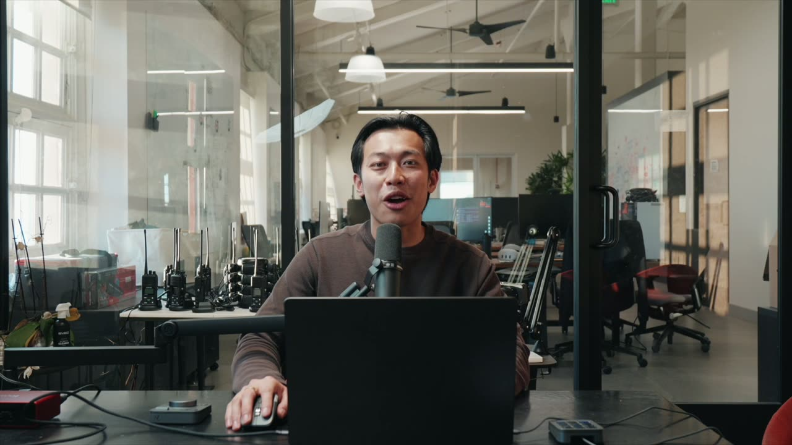
{kind=link}
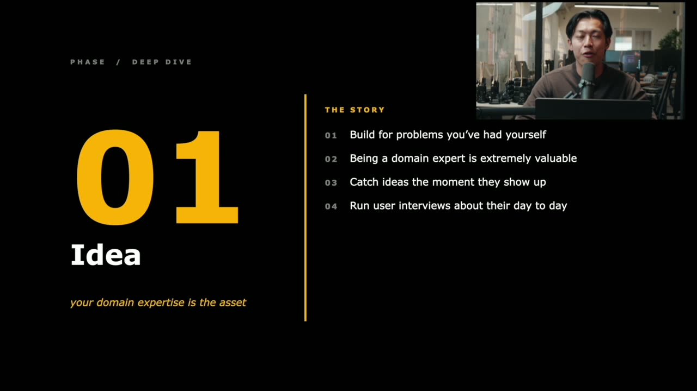
{kind=link}
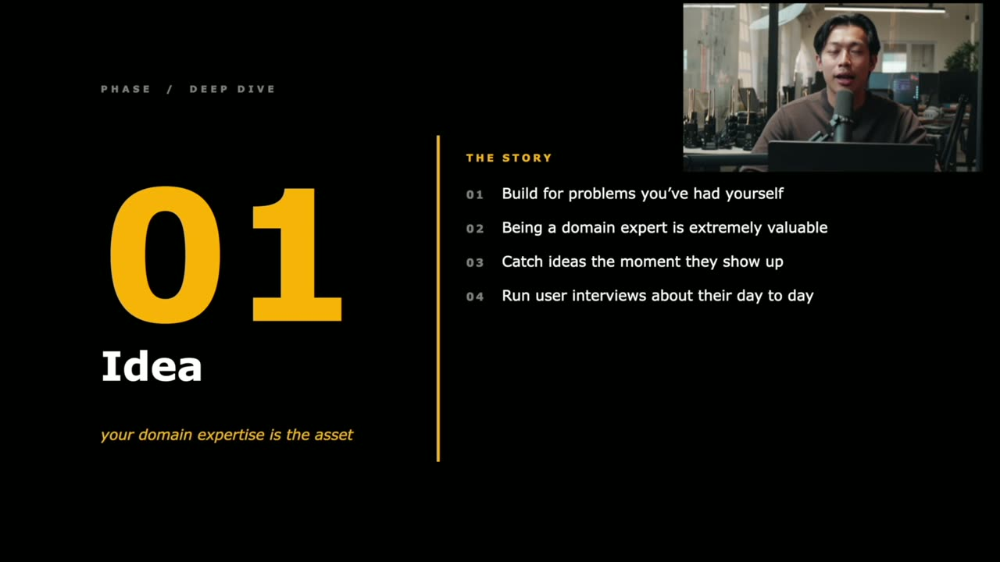
{kind=link}
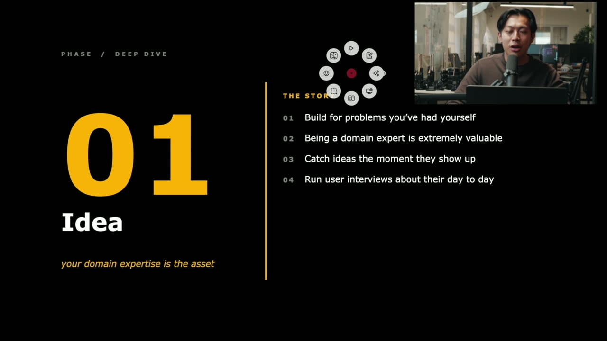
{kind=link}
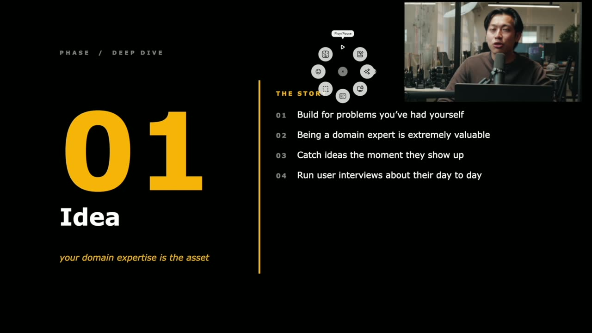
{kind=link}
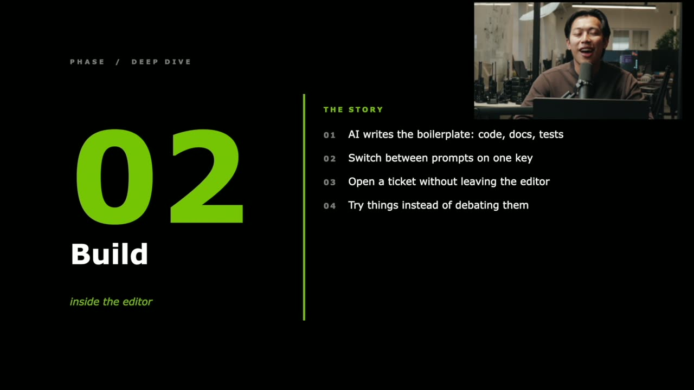
{kind=link}
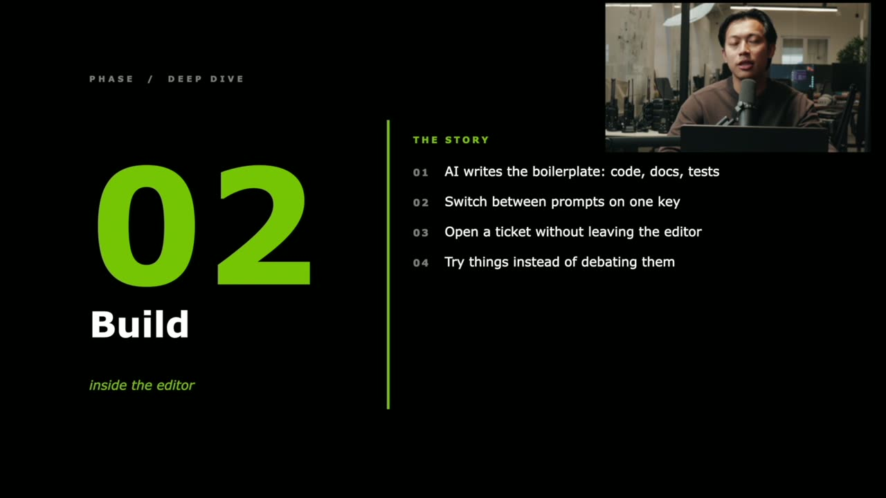
{kind=link}
{kind=link}
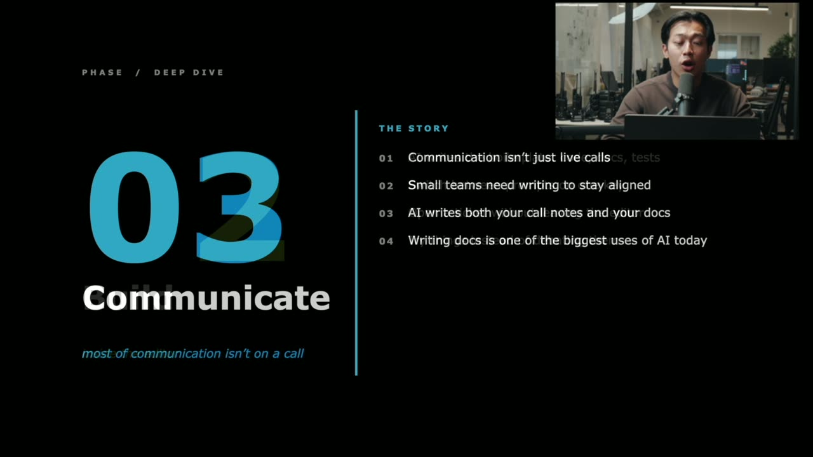
{kind=link}
{kind=link}
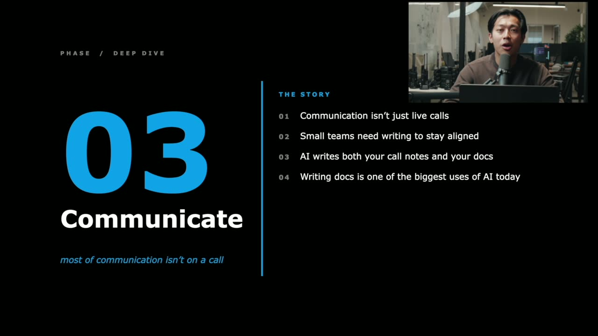
{kind=link}
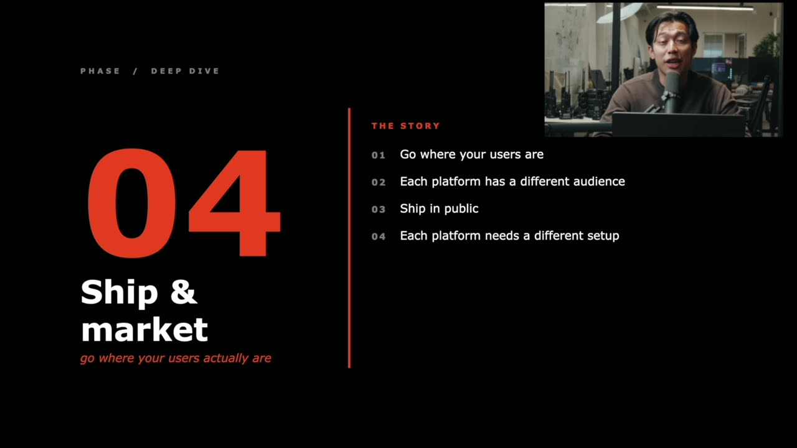
{kind=link}
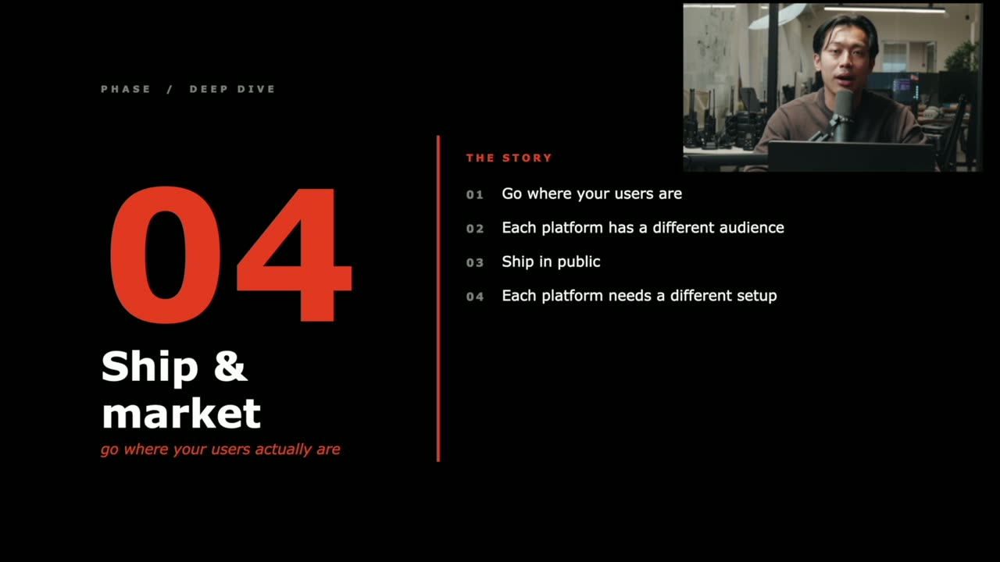
{kind=link}
{kind=link}
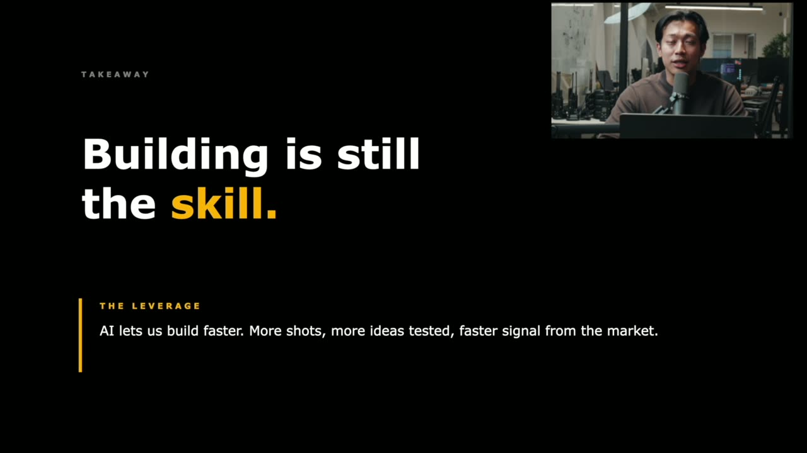
Frames around each announcement
Transcript
Show / hide transcript (13,546 chars)
[00:00:00] WILL WANG: Hi, everyone. [00:00:00] Today we're going to talk about how [00:00:01] to streamline your end-to-end developer workflow with AI. [00:00:05] My name is Will. [00:00:06] I'm the founder of Clova, where we build an AI agent [00:00:09] that allows different brands and businesses to be able [00:00:11] to quickly generate on-brand assets [00:00:13] and iterate through them as well. [00:00:15] We're also backed by the Founders Inc. [00:00:16] Accelerator here in San Francisco within Fort Mason. [00:00:19] And, in my free time, I enjoy making YouTube videos [00:00:22] where I document my startup journey [00:00:23] with over 18,000 subscribers on the channel. [00:00:26] And I just share about the ups and lows of building a startup [00:00:29] and also share about how I build software. [00:00:31] And today we're going to cover the four phases [00:00:33] of shipping a product end to end. [00:00:35] In the first phase, we're going to talk about how to come [00:00:36] up with startup ideas. [00:00:38] In the second phase, we're going to talk about how do we build [00:00:40] with Copilot and VS Code. [00:00:42] In the third phase, we're going to talk about how [00:00:44] to effectively communicate with our team so we're able [00:00:46] to move fast while building quality software. [00:00:49] And, lastly, once we have our software built, [00:00:51] we're going to talk about how do we go to market [00:00:53] to get real-life users. [00:00:54] To come up with the idea, the number one thing I suggest is [00:00:57] to build for a problem you have for yourself. [00:00:59] The first reason is that, if you already run [00:01:01] into the problem yourself, [00:01:03] most likely you already understand it [00:01:04] on a very deep level. [00:01:06] And the second reason is that, for a problem you already have [00:01:08] for yourself, you will also be using your own software [00:01:11] to resolve those issues, right? [00:01:12] So you're able to go through rapid iteration loops. [00:01:14] The second thing is to be a domain expert in a field [00:01:17] that you're trying to solve the problem for. [00:01:19] Again, that also helps with understanding the problem. [00:01:22] The second thing is that you're able [00:01:23] to most likely know other people in the industry already, [00:01:27] so you're able to find early adopters very quickly [00:01:29] through your network. [00:01:31] And a lot of times people think, when you come [00:01:33] up with a startup idea, you want to sit down and think [00:01:35] about what good ideas there is. [00:01:37] But, from my own experiences, a lot of times all the ideas, [00:01:41] where they come from is when I'm not actually actively trying [00:01:45] to think of different ideas to build. [00:01:47] For example, let's say if I'm browsing the internet, [00:01:50] and what happens is that you always want [00:01:52] to catch the ideas the moment they come [00:01:53] up because they can very quickly go away. [00:01:55] So something that has been helpful is [00:01:57] that I'm using the Logitech MX Master 4 over here is [00:02:00] that they actually have an action ring here. [00:02:02] So over here I configure it over here to open up a new notepad. [00:02:05] So I have a documentation where I'm able [00:02:08] to quickly write out different ideas. [00:02:10] Another thing that's also helpful is that a lot [00:02:12] of my ideas come from when I'm actually actively reading [00:02:15] different articles, consuming new information. [00:02:17] So I also use the screenshot feature very often here [00:02:20] to quickly screenshot the parts, so I can also save [00:02:22] that into my notes so I have it for reference. [00:02:25] And, lastly, something that's also helpful is just to play [00:02:27] and pause my music, honestly. [00:02:29] Sometimes that puts me in a different mode when I'm thinking [00:02:31] of different ideas or also just when I'm, you know, [00:02:33] working on different coding projects. [00:02:35] The last method I suggest is to run user interviews [00:02:38] about their day to day. [00:02:39] So, for these, I tend to focus on questions [00:02:41] like what do you spend the most time on, what is your day [00:02:44] to day like, and what does your organization have budget for? [00:02:48] Because those things are very deterministic, right? [00:02:50] They're not very opinionated. [00:02:51] Since they're just describing what is happening, [00:02:54] they won't usually have a bias [00:02:55] when they're answering the question. [00:02:56] So, moving on to the building phase, [00:02:58] so the three major use cases I've been using AI for, [00:03:01] number one, will be obviously writing code with GitHub Copilot [00:03:04] but also writing a lot more documentation, [00:03:06] a lot more tests as well. [00:03:08] For the documentation and test part, I have already tried a lot [00:03:11] of different prompts and also iterated a lot to be able [00:03:14] to consistently get the results I want, right? [00:03:17] However, to be able to, you know, quickly find these prompts [00:03:19] or copy and paste them in, I'm definitely not going [00:03:21] to rewrite them in the GitHub Copilot Chat. [00:03:24] I actually already configured my keys [00:03:26] on the Logitech Creative MX Keypad. [00:03:28] So each of these keys, when I'm in VS Code, [00:03:31] actually is a different prompt. [00:03:32] So I'm able to quickly paste in these prompts [00:03:34] and execute these tasks without having to context-switch and try [00:03:37] to find where these prompts are stored [00:03:39] or rewrite them from scratch. [00:03:41] And something that has also been very, very helpful is [00:03:45] that because for each [00:03:46] of the features I'm shipping I actually start a new AI session, [00:03:50] right, because obviously with AI, [00:03:52] a limitation is the context window. [00:03:54] So I don't want to have, like, a feature that is not relevant [00:03:56] to the next feature I'm shipping within there. [00:03:58] But you're able to pass down the information very effectively. [00:04:01] After I ship a feature, or after each session, [00:04:04] I write down a very detailed AI doc or also for myself to read [00:04:08] and for the next AI session to be able to catch up on [00:04:10] within that feature, within that folder as well. [00:04:12] A new thing that has also been happening with my team is that, [00:04:15] in the past, we're always kind of debating a lot, right, [00:04:18] about what features to ship, what experiments to run. [00:04:21] But because of how much faster we have [00:04:24] to ship software these days, instead of debating, [00:04:26] we just try multiple features and go to production [00:04:29] with it because, at the end of the day, [00:04:30] we want to let the market decide and see [00:04:33] where the pull is coming from. [00:04:34] So, moving on to Phase 3, we're going to talk [00:04:36] about how communication has also really changed with AI [00:04:39] for different teams while shipping software. [00:04:41] So, in the past, a lot of times I would just get on the call [00:04:44] and explain to my team what I think is important, [00:04:46] what the milestones are trying to hit, [00:04:48] or what other software issues we're running into. [00:04:50] However, with AI now, we're able to write [00:04:53] down so much more documentation at a quick pace. [00:04:56] I actually tell the AI to write [00:04:57] down a very detailed HTML doc that's formatted very nicely. [00:05:00] And I present that to my team because, when I'm on the call [00:05:03] with them, now, they're able to really stay aligned more. [00:05:06] And I also noticed they're able [00:05:07] to digest the information a lot better, [00:05:09] since there's something visual for them to follow along with. [00:05:11] And I also obviously share those documentations with them [00:05:14] after the call, so they also have that for reference. [00:05:16] But, also, while showing documentation on the call, [00:05:20] I also use Microsoft Teams for my calls. [00:05:22] So, in Microsoft Teams already, it takes the transcript; [00:05:25] and obviously the AI also writes down good documentation [00:05:29] and different action items for the team to follow as well. [00:05:31] Detailed documentation has always been super helpful [00:05:33] for the code base and also on the business side, as well, [00:05:36] but they just take so long to do. [00:05:37] And the cool thing is that a lot of times you're able [00:05:39] to get consistent behavior from the AI [00:05:41] if you're using the prompt that you have already tested. [00:05:44] So I actually also have the prompt saved [00:05:46] on my Logitech MX Creative Keypad right here. [00:05:48] So I'm going to quickly access that to write [00:05:51] down these documentations as well. [00:05:52] And, moving on, we're going to talk [00:05:53] about once you have your app shipped, right, [00:05:55] how do you go to market? [00:05:56] How do you find users? [00:05:57] So usually what I suggest is always to go [00:06:00] where your users are gathering. [00:06:02] And, for different products, there's different places [00:06:06] that users gather, right? [00:06:07] So a lot of the audience watching right now are [00:06:09] probably developers. [00:06:10] So, for the dev community, [00:06:11] usually what I suggest will be Twitter. [00:06:14] Also, I suggest Product Hunt, since a lot of folks [00:06:16] on Product Hunt are looking at different products to try. [00:06:18] And a common way that people have also been doing is [00:06:20] to create an open-source project, right, [00:06:22] since an open-source project, if you build something cool, [00:06:24] a lot of times people contribute to it; and they're very invested [00:06:28] when they see cool software that's open source. [00:06:30] And through GitHub and GitHub Stars, you're able to get a lot [00:06:33] of visibility through that. [00:06:34] For my own personal software that I'm building [00:06:36] with Clova right now, I'm actually doing a lot [00:06:38] of the marketing on Instagram, [00:06:40] since a lot of my users gather there [00:06:42] and through LinkedIn as well. [00:06:43] And something that also has been helpful from my own experience [00:06:47] and other folks that I see ship software is also building [00:06:50] in public. [00:06:51] So I do that with YouTube, right, where I kind [00:06:53] of just document how I'm building. [00:06:54] And people get invested in your journey, and they end [00:06:56] up trying your software. [00:06:57] And, once you're able to get users there, you want to be able [00:06:59] to reach out to them through email or whatever platform it is [00:07:02] since you want to get on these calls with these users [00:07:04] to get feedback, right, to know how to build a relationship [00:07:07] and obviously to know how to improve [00:07:09] and iterate on your software. [00:07:11] So a lot of times these messages are also very consistent. [00:07:14] I have a couple messages already written up. [00:07:16] So I actually already also have those saved [00:07:18] on my Logitech MX Creative Keypad over here as well. [00:07:21] So I'm able to, you know, simply just change a first name [00:07:23] and then send out those messages very, very quickly as well. [00:07:26] But the thing is building is still the skill. [00:07:28] But the leverage now is that AI lets us build so much faster, [00:07:31] so we can put up more shots and test out way more ideas. [00:07:33] And, after I put it out there, we can see the signal [00:07:36] from the market on if it's an idea we want [00:07:38] to continue working on or not. [00:07:39] But on the flip side, too, something I have been noticing [00:07:42] for myself and others is [00:07:43] that a lot more personalized software has been, you know, [00:07:46] coming to life, as well, because in the past it's hard [00:07:49] to justify the time and energy [00:07:50] to build those personalized software, right? [00:07:52] But now with AI you're able to bring those ideas to life [00:07:54] so much quicker, which has been super, super cool. [00:07:57] And I'm excited to see what you ship next. [00:07:59] If you do, please let me know. [00:08:01] I'm always excited to check out new projects as well. [00:08:05] And I hope you learned something from this presentation, [00:08:07] and thank you for the time.